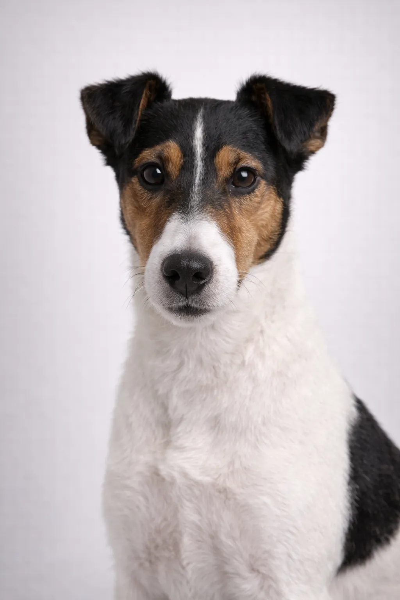

Smooth Fox Terrier
Conosciuto per essere attento, fearless, il Smooth Fox Terrier ha conquistato cuori in tutto il mondo.
14-16 in
15-20 lbs
Valutazioni della Razza
Temperamento
Vivace e audace con la tipica sicurezza dei terrier. Amichevole ma indipendente.
🏥 Salute
Generalmente sano. Attenzione a sordità, lussazione della razzala e problemi oculari.
🏃 Esercizio
Alta energia che richiede esercizio vigoroso quotidiano e gioco.
Panoramica
Lo Smooth Fox Terrier è la più antica delle due varietà di Fox Terrier, con un mantello liscio e facile da curare.
Temperamento
Lo Smooth Fox Terrier è noto per essere vigile, senza paura e amichevole. Sono eccellenti con i bambini e meravigliosi animali domestici. Una socializzazione precoce li aiuta a svilupparsi in compagni equilibrati.
Salute
Generalmente sano con un'aspettativa di vita di 12-15 anni. Le preoccupazioni comuni includono lussazione della razzala e problemi dentali. Controlli veterinari regolari e cure preventive sono importanti. Mantenere un peso sano aiuta a prevenire molti problemi di salute.
Esercizio
Razza ad alta energia che richiede esercizio vigoroso quotidiano—almeno un'ora di attività. Prosperano con famiglie attive che amano le attività all'aperto. La stimolazione mentale attraverso l'addestramento e i giochi puzzle è altrettanto importante. Senza esercizio adeguato, possono sviluppare problemi comportamentali.
⦿ Questa Razza è Adatta a Te?
✓ Ideale Per
- Famiglie attive
- Chi cerca un mantello a bassa manutenzione
- Proprietari di terrier esperti
- Case con giardino
✗ Non Ideale Per
- Famiglie sedentarie
- Case con piccoli animali
- Chi cerca un cane tranquillo
- Proprietari alle prime armi
Il Nostro Verdetto: Terrier eleganti e atletici con energia illimitata. Gli Smooth Fox Terrier sono più facili da curare dei Wire ma altrettanto vivaci.